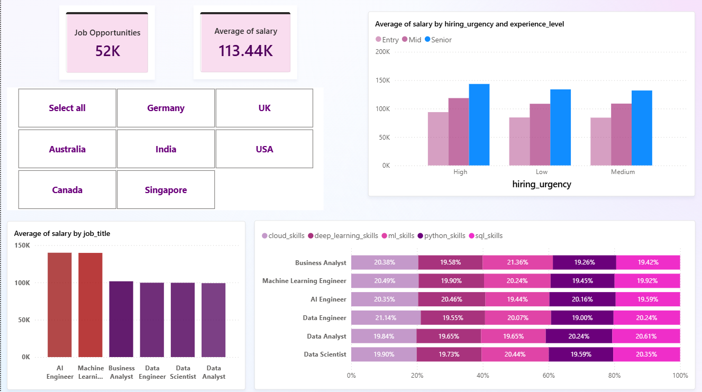
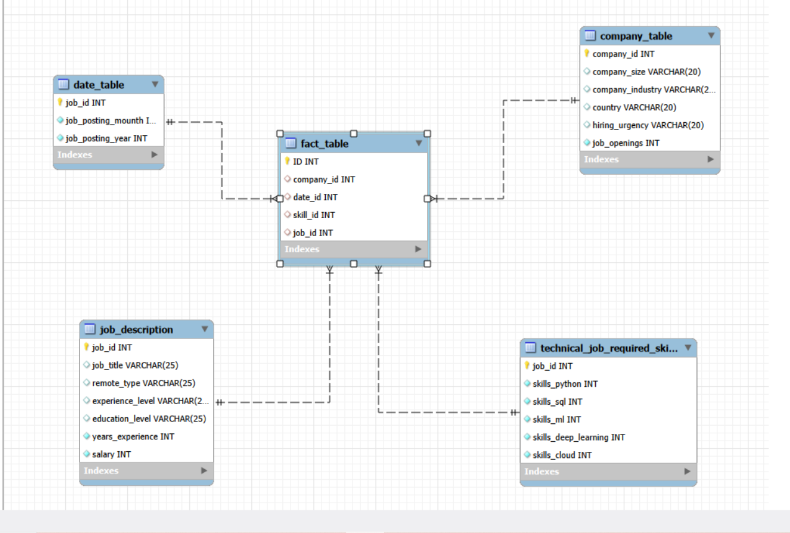
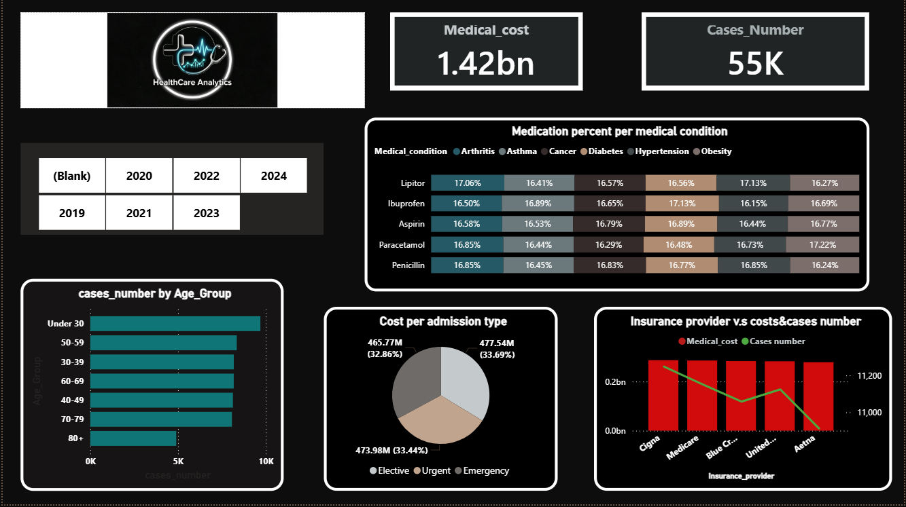
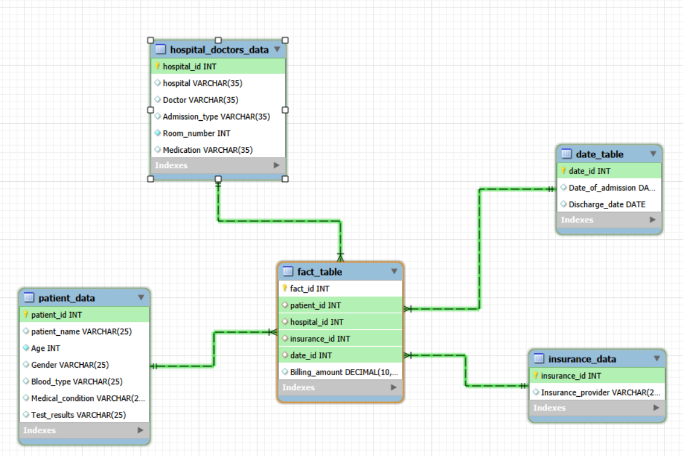
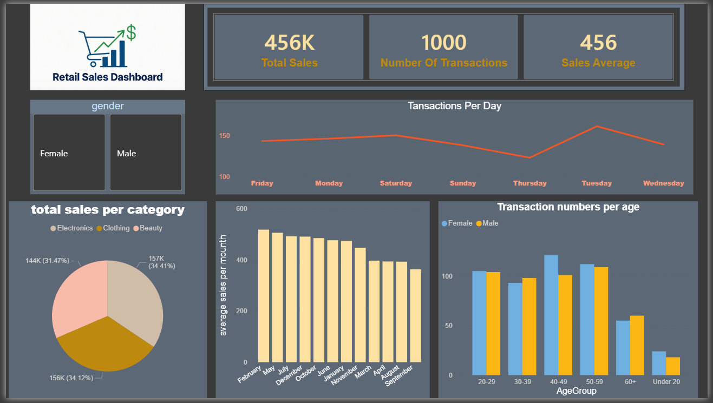
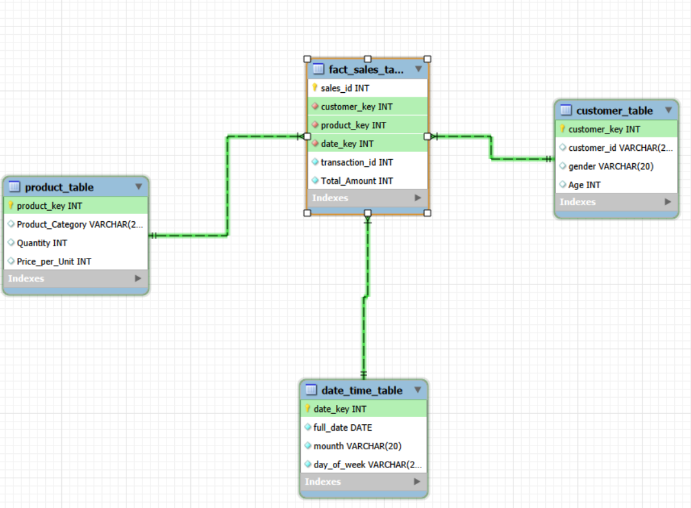

Showcasing my data analysis projects and insights. View Live Site
I am Hossam Hassan Ragab, a dedicated data analyst with 1 year of professional experience in the field. I completed a comprehensive 6-month program in Data Analytics with Professional Development Skills for the Digital Age at ALX Academy, where I honed my expertise in data-driven decision-making.
My technical skills include proficiency in Excel, Power BI, and SQL, enabling me to extract, analyze, and visualize complex datasets effectively. Passionate about leveraging data to drive insights, I specialize in transforming raw information into actionable strategies that support business growth and informed decision-making.
Contact: Phone: 01147699721 | Email: elhoss159@gmail.com | LinkedIn | GitHub
Overview: A comprehensive analysis of the global AI job market, transforming raw CSV data into an interactive Power BI dashboard. Highlights salary benchmarks, in-demand skills, and hiring trends.
Objective: Analyze 52,000+ AI-related job postings for insights on salaries, skills, and trends.
Tools & Technologies: MySQL, SQL, DAX, Power BI, CSV Cleaning.
Key Findings: Average salary $113.44K; Top skills: Cloud Platforms, Deep Learning, Python, SQL.


Overview: Analysis of 55,000 healthcare cases and $1.42 Billion in costs, focusing on cost drivers and demographics.
Objective: Uncover patterns in medical costs, patient distribution, and provider metrics.
Tools & Technologies: SQL, MySQL, Power BI, DAX.
Key Findings: Total cost $1.42B; Urgent care highest contributor; Balanced admission types.


Overview: Interactive dashboard analyzing retail sales, customer demographics, and trends.
Objective: Extract insights on sales performance, demographics, and categories.
Tools & Technologies: SQL, Power BI, DAX.
Key Findings: Total sales $456K; Clothing leads; Age 40-49 highest volume.

